多模态模型检索头：跨模态共享，也能被训练
研究者在18个模型检查点上追踪检索头，发现视听证据共用同一批头，并把检索头注意力当作优化目标提升了文档检索。
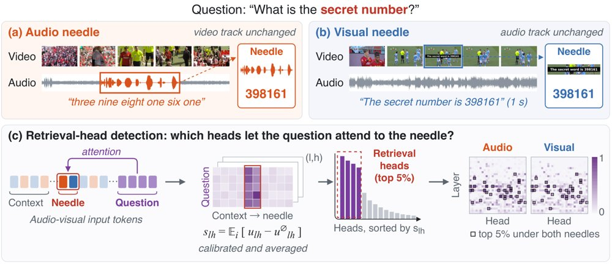
检索头得分图显示，无论证据以语音还是屏幕文字呈现，高分注意力头都集中在少数层和少数头上，音频与视觉条件选出的头高度重叠。
解决了什么问题。已有工作把长上下文中的证据定位归因于一小撮「检索头」，但这类分析基本局限于文本和图像，尚不清楚模型扩展到语音等新模态后该机制是否延续。另一方面，多数研究止步于解释现象，如何利用检索头反过来提升模型能力仍缺少系统验证。
方法。作者构造配对输入：把同一个六位数字以语音朗读或屏幕字幕的方式插入同一段长视频，其余背景、问题、答案与插入深度全部固定，从而只改变证据模态。他们在统一的查询—证据注意力打分下比较各层各头的排序一致性，并用定向消融（对照为同层同数量的随机头）检验必要性。随后把选定检索头的问题—页面注意力当作排序分数，用带难负例的排序损失只训练这些头上的 LoRA 适配器。
关键结果。跨模态共享明显：8个全模态模型中，69%到83%的音频与视觉top-5%检索头重合，全体头打分的Spearman相关系数在0.88到0.92之间；SALMONN系列与其视觉语言骨干的相关系数不低于0.97。消融top-5%检索头后，Qwen2.5-Omni-7B的音频精确匹配从98.3%跌到0，而匹配的随机消融仍保留96.9%。跨模态共享头不足全部头的2%，消融它们仍在8项下游任务中的4项上显著掉分（图像检索头最多1项）。在MMDocIR上，用排序目标训练后Qwen3-VL-8B的页面Micro Recall@1提升6.03点（Macro提升5.05点），布局检索在无布局监督下提升1.46点；Qwen2.5-VL-7B和Gemma3-12B的页面Micro Recall@1分别提升5.69和2.17点。
为什么值得看。它把「检索头」从一个可解释性观察对象变成了可直接优化的训练目标，并说明这种优化在三个模型家族上都有效。对视听长输入和长文档检索这类证据稀疏的场景，这是一个改动量很小的介入手段。
局限 / 存疑。证据只覆盖文本、图像与视听三种模态，结论能否推广到更多模态尚不清楚；检索头本身依赖top-5%阈值和检测数据的选择，作者也给出了相应的敏感性分析。此外，与已发表检索器的对比因评测设置不同不可直接比较，作者自己只把同设置下相对未训练检索头的增益作为受控结论。
模型可解释性、模型内部机制
alphaXiv · arXiv
WorkFactory：把职业意图变成可执行任务
WorkFactory 用信息支撑图反向规划任务环境，探测执行失败并修复，构建 112,686 个任务、覆盖 612 个
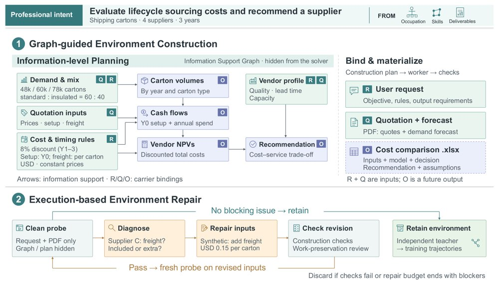
以合成运输纸箱采购任务为例的 WorkFactory 流程：(1) 信息支撑图指导环境构建，并把推导结果留给求解者；(2) 干净的探测执行暴露阻塞问题并引导受检修复，之后才由独立教师采集轨迹。
解决了什么问题。训练能胜任专业工作的智能体，需要大量多样且可执行的专业任务，以及可靠的专家演示轨迹。但任务信息缺失或不一致时，教师模型会卡在执行环节，或引入缺乏依据的假设、漏做关键工作，使轨迹变成低质量监督。论文举的例子是供应商选择任务：报价文件没写某供应商的价格是否含运费，生命周期成本就无法一致计算；但若直接把算好的成本写进文件，又抹掉了本该由智能体完成的工作。
方法。作者从职业分类体系、公开技能文档和真实职业交付物三条路径合成「职业意图」，并用 LLM 评审其可行性与职业合理性。对每个意图，方法从目标输出反向构建信息支撑图，把信息单元、载体（用户请求、参考文件、外部资源、未来交付物）和支撑关系显式写出来，只提供前提信息，把中间推导与结论留给求解者。任务构建完成后，另一个独立的探测求解者在看不到任务构建图与计划的条件下执行任务，报告阻塞性缺陷；修复只能补充前提，必须通过「工作保留」审查，再经新一轮探测，只有通过的任务才交给 GLM-5.3 教师采集轨迹，用于掩码监督微调。
关键结果。最终语料包含 112,686 个任务、612 个细粒度职业、23 个主要职业组，平均每任务提供 4.15 个参考文件（平均 1.56 MiB），教师轨迹平均 57.36 个 assistant 轮次、62.95 次工具调用、136.18K token。微调后的 WorkPilot-35B-A3B 在四个基准上全面超过基座：GDPval-AA 从 879 升到 1565 Elo，JobBench 从 28.91 升到 62.35，Workspace-Bench 从 47.12 升到 56.53，OmegaUse-OfficeVal 从 7.14 升到 21.18；WorkPilot-4B 在 GDPval-AA 上从 661 升到 1375，WorkPilot-27B 从 975 升到本地估计的 1612 Elo。5K 任务的组件分析显示，信息级规划把 GDPval-AA Elo 从 1245 提到 1293，叠加执行修复后到 1326（累计 +81），同时跨文件不一致缺陷率从 32.82% 降到 25.74%、再降到 4.84%。数据规模方面，前 5K 任务贡献 447 Elo，而从 75K 扩到 110K 只增加 13 点；35B-A3B 的平均执行长度从基线 24.87 轮先升到 2K 任务时的 162.88 轮，再回落到 110K 时的 85.90 轮，代码执行失败率从 16.0% 降到 6.3%。
为什么值得看。论文把工作型智能体数据合成的关键，落在「信息边界」上：哪些前提必须给、哪些推导必须留，并用执行探测把这一边界变成可检验的约束，而不是只堆砌看似合理的文件。它给出的规模、修复效果和跨模型尺度增益，为专业任务数据合成提供了可复用的流程参照，且公开了部分数据与模型权重。
局限 / 存疑。教师模型 GLM-5.3 只接受文本输入，因此训练与评测均为纯文本，骨干的视觉与对齐组件被冻结，多模态职业任务未被检验；研究也只做了监督微调，未涉及强化学习。多数 Elo 是本地两点锚定的估计而非官方评分（WorkPilot-27B 的 1612 即为本地估计），且成分分析用的探测报告在「信息级规划」条件下还出现泄漏/捷径与自不一致缺陷上升。
基础大模型 & 基础模型底层研究
AI 智能体 Agent / 自主智能
alphaXiv · arXiv
不靠外部标注，用内部注意力信号提升情感识别
SIAB 用激活 patch 找出 4 到 20 个情感敏感注意力头，再放大这些头已关注的内容词；不训练、不更新参数、不
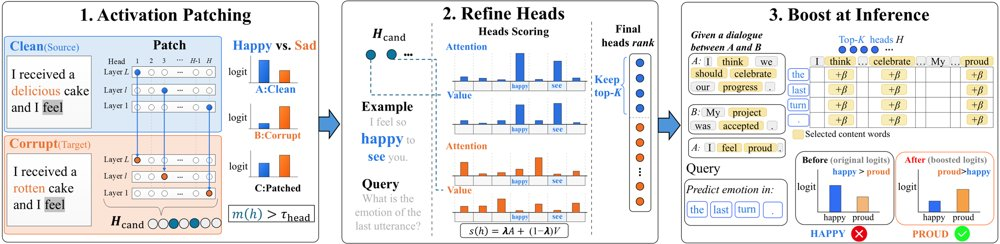
SIAB 流程：先用激活 patch 因果定位出数百个头中的 4 到 20 个稀疏情感头，再对这些头在最终 query 位置原本关注的 content token 加 pre-softmax 偏置，全程无训练、无参数更新、无外部片段。
解决了什么问题。在多轮对话中，情感状态属于隐状态：它没有显式变量，只能从稀疏线索中推断，而且这些线索在话题转移后仍需保留。与知识型失败不同，相关证据已经在对话里，难点在于模型是否把它路由到最终决策位置。已有的注意力干预方法依赖标注数据来挑选注意力头，并依赖外部指定的目标 token，因此难以迁移到情感证据的分布上。
方法。作者先在合成的干净—损坏最小对比对上逐头做激活 patch，用归一化 logit 差恢复度筛出因果性情感头；再用 200 段 DailyDialog 对话做无标签精炼，按内容词上的注意力与 value 质量排序取 top-K，K 分别为 4、10、20。推理时，对选定头在最终 query 位置已经注意的 top-30% 内容词，在其 pre-softmax 注意力 logits 上加一个固定标量偏置 β，不重新定位、不访问金标签。
关键结果。在 Gemma3-4B、Qwen3-4B、LLaMA3-8B 三个模型、两个基准和多种提示设置下，18 个设置全部为正增益：ECC macro-F1 相对零样本最多提升 7.67 点（Gemma3 从 52.26 升到 59.93），GoEmotions 最多提升 3.28 点；ECC 上最大增益为 +10.27。把 SIAB 与 PASTA 组合后，Gemma3 在 ECC 上比零样本基线高 12.51 点 macro-F1。对照实验中，按任务内部配置的 PASTA 头迁移到 GoEmotions 时，LLaMA3 下降 7.19 点 macro-F1。
为什么值得看。情感连续性不需要补充新事实，只需要把已有证据路由到决策点；这项工作给出了一个不训练、头集可跨任务复用的推理时接口。并且，内部信号与 PASTA 式外部信号在多数配置下近似可加，说明两者捕捉的是互补的方面。
局限 / 存疑。实验只覆盖 4 到 8B 的英语指令模型、两个英语情感基准，70B 以上规模、多语言和非情感任务均未验证。更难的一组样本仍然无法被挽救：把 β 加倍时，Gemma3 只多救 4.5%，Qwen3 与 LLaMA3 分别只有 0.4% 和 0.1%。
基础大模型 & 基础模型底层研究
模型可解释性、模型内部机制
alphaXiv · arXiv
把真实网站自动改造成智能体训练场
WebAnything 从真实 URL 全自动重建可执行、可重置的网站环境，并配套生成任务与交互轨迹。
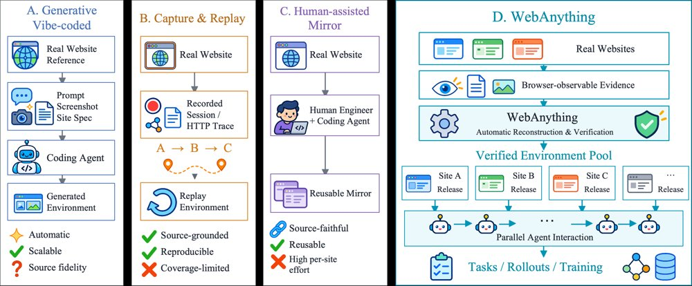
WebAnything 的重建流程：源证据约束可执行构建，独立验证器检查冻结候选，并把差异分流为局部修复或定向重采集。
解决了什么问题。网页智能体需要多样、可执行、可重置的网站环境，才能进行可复现的训练与评测，但直接在真实网站上运行会让状态初始化、复现和安全隔离变得困难。现有人工镜像方案要对每个站点单独工程化，生成式建站容易偏离指定网站，抓取回放方案的交互覆盖又受限于已抓取内容和回放能力。
方法。作者提出 Explorer–Builder 流水线：从真实 URL 采集浏览器可观测的页面结构、计算样式、资源依赖，以及交互前后的状态变化，形成页面结构与外观、资源与依赖、交互前后观察三类证据，据此实现本地可执行路由与状态转移。独立验证器在单独上下文中检查已冻结的候选实现，不得修改代码；若证据足以判定期望结果而候选未复现，则触发局部修复，若证据不足则生成具体的观察请求进行定向重采集，更新后重新冻结并复验。
关键结果。资源池包含 244 个网站产物，覆盖 14 个应用域、53 个细类，支持 12,984 个已执行且通过验收的任务。在五个 WebHarbor 匹配站点、14 个历史状态上，自动指标为 Pixel 0.9240 对 0.8083、SSIM 0.7904 对 0.6260、Text F1 0.8541 对 0.2617，盲审为 12 胜 2 平 0 负；但同一子集的交互测试中，WebAnything 的能力覆盖率为 75%、全部测试通过率为 63.3%，低于 WebHarbor 的 80% 和 76.7%。另一组五个 VeriEnv 站点上，选定产物通过 29/33 项测试，VeriEnv 为 21/33。85 站点历史集合记录无逐站人工实现或修复，84 个站点可计价模型调用合计 220.62 美元（均值 2.63、中位数 1.60，为下界）。用 5,856 条轨迹对 Qwen3.5-9B 做 SFT 后，REAL 成功率从 22/91 升到 31/91（+9.9 个百分点），Odysseys-Easy 的 Rubric Avg 与 Task Avg 分别提升 6.25 和 6.32 个百分点，WebArena-Verified Overall 由 16.41% 升到 29.74%（+13.33 个百分点），但其中 Retrieve 子项下降 8.75 个百分点。
为什么值得看。它把「真网站多样性」和「本地可复现执行」拼在一起，为网页智能体提供了一条少依赖逐站人工工程的规模化环境与轨迹供给路径。
局限 / 存疑。训练验证只在 Qwen3.5-9B 这一规模上做，未系统评估更大模型、其他后训练方法与更长训练预算；站点会持续变化，论文未评估镜像的时效性与长期维护成本，且高保真复现涉及版权、商标与服务条款，公开分发受授权约束。此外，验证分析属事后观察性质，219 对报告里只有一对严格匹配同一候选，且交互覆盖在 WebHarbor 子集上实际落后于基线。
AI 智能体 Agent / 自主智能
alphaXiv · arXiv
框架自由迫使关系注意力成为Wilson环
每个实体可独立旋转坐标系时，关系只能沿闭环（Wilson环）组合：作者证明这唯一决定了边注意力的更新形式。
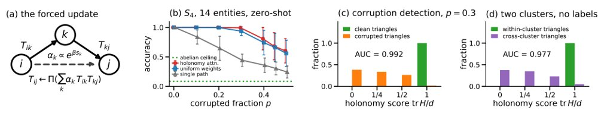
图1：零样本holonomy attention，(a)被对称性强制的更新式；(b)未观测S_4关系准确率随损坏比例变化（14实体、度8、四轮）；(c)观测三角形的holonomy分数tr H/d；(d)同一分数在无标签下区分簇内与跨簇三角形。
解决了什么问题。注意力如何让关系算子相互作用，通常被当作设计选择。但如果实体嵌入的坐标系本身没有意义——新出现的实体没有内在框架——预测就必须对逐实体的坐标旋转不变。论文追问：这一对称性是否唯一地约束关系与关系之间的交互形式。
方法。作者把每条关系看作连接两个实体的O(d)平行移动，规范变换在每点独立作用，并沿生成树做规范固定。由此证明：不含闭环的边集合之间完全没有交互；三角形的唯一规范不变分数是holonomy H=T_ijT_jkT_ki的类函数，即Wilson环；边的唯一等变更新为U=Ψ(H)T_ij。据此实例化holonomy attention：以Wilson环为分数、经共享顶点组合、用极投影回到O(d)，不学习任何参数，仅在S_4置换表示上运行四轮。
关键结果。在14个实体、度8、四轮的S_4群同步任务上（每格1000个实例），20%的边被随机置换破坏时，holonomy attention对未观测关系对的准确率为0.988，稀疏度5图为0.886；只走单条路径分别为0.645和0.625，交换算子架构的上限为0.083。损坏率0.3和0.45时准确率降至0.937和0.700，比均匀权重分别高0.026±0.004和0.078±0.006。holonomy分数区分干净与损坏三角形的AUC为0.993，交换分数在S_4上的上限为0.759；无标签区分两个簇的三角形AUC为0.98。
为什么值得看。这为边注意力给出了一条可由对称性推出的设计规则，并把知识图谱的交换嵌入、AlphaFold的三角形更新与格点QCD放进同一框架，压缩了关系推理的架构空间。
局限 / 存疑。它并不是更好的同步器：Singer特征向量法与之持平或在0–5点内领先，cycle-edge message passing在n=12试点上最多领先11点。实验限于S_4等有限群和14个实体的小图，且算子需从群库中取用，尚不能由上下文生成。
基础大模型 & 基础模型底层研究
模型可解释性、模型内部机制
因果推断、统计学习、理论机器学习
alphaXiv · arXiv
9B智能体从解说稿直出长视频，比肩Opus 5
WeVisCut用单个9B策略从解说稿生成完整长视频，总评90.5，接近Claude Opus 5的89.9。
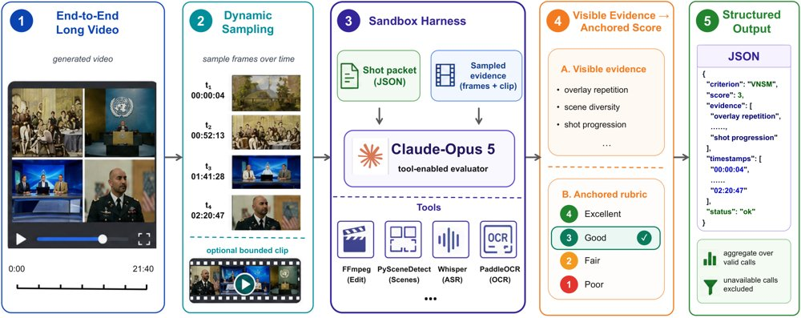
VNSM的评判路径：镜头包绑定解说窗口、时间戳、视频与清单摘要、采样器/提示版本和评判快照，Opus 5评判器必须先记录可见证据，再从锚定档位中选一个分数并输出符合schema的JSON。
解决了什么问题。从解说稿生成长视频，需要在规划、素材检索、配音与时间线之间做互相牵制的决策：改一个镜头时长会牵动后续时间戳，素材不合格又要回头改检索和规划。现有智能体剪辑系统多是把通用模型串成多阶段工作流，紧凑且任务适配的策略在质量与成本之间如何取舍仍不清楚。成品视频里看不到工具调用、中间产物和失败记录，因此也难以直接拿来做监督。
方法。作者搭了一套共享生产状态的智能体框架：同一个9B策略（Qwen3.5-9B）轮流扮演调度者、生成者和批评者，运行时校验工具参数与前置条件，失败时做有界修复并保留已成功的产物。数据侧用四阶段流水线，先对成品视频做“编辑反演”恢复解说与镜头的对应意图，再用与线上一致的工具集做验证回放、观察—反思—修复，最后物化成带真实工具返回的角色级训练样本。训练分三步：统一SFT加运行时验证的拒绝采样微调，再用Guided-OPD学习从自己造成的错误状态中恢复，最后用角色与上下文分组的RCF-DAPO比较同一决策下的不同候选。
关键结果。从3,750个成品视频项目构建出134,771条训练样本。在100个留出任务上，WeVisCut把基础模型的Overall从74.5提到90.5（+16.0），五项指标分别为SCF 88.4、VNSM 74.6、TPR 94.0、LHC 98.8、ERY 96.7。与Claude Opus 5（Overall 89.9、VNSM 74.8）相比，它的Overall均值接近，但每成功输出一分钟只生成2,377个token，Opus 5为78,763，约为前者的1/33。端到端原生流程对比中，WeVisCut的Overall为90.5，Crayotter为84.9，VideoAgent为82.5；每成功输出一分钟耗时2.1分钟、成本0.09美元，对应为8.6分钟和0.97美元、10.4分钟和0.58美元。三名标注者的盲评总体偏好为4.56，Crayotter为3.48，VideoAgent为3.46。
为什么值得看。这项工作把“状态化执行环境+可执行监督+策略学习”连成一条链路，说明一个9B的任务适配策略在固定工具环境下可以用远低于通用大模型的生成成本拿到相近的剪辑质量；对那些在意推理开销的长视频生产管线，这条路线值得参考。
局限 / 存疑。效果受限于HyperFrames模板库，少见视觉风格只能用最接近的模板近似；数据集与项目级切分无法覆盖所有领域、剪辑惯例和素材分布，验证回放只能保证在注册运行时内可执行，长视频质量仍依赖检索器的稳定性。评测层面也有保留：Overall是五项均值的描述性汇总，论文明确不给出标准差、置信区间或显著性检验，人工评分只是描述性均值；而VNSM使用Claude Opus 5（同时是论文的对比基线）作为留出评判器，作者自己也承认证据隔离与冻结锚点无法消除评判偏差和服务漂移。
生成式 AI
AI 智能体 Agent / 自主智能
alphaXiv · arXiv
EditAgent：扩展智能体的动作与观察空间
EditAgent 让每个编辑步骤并行调用多种方法生成候选，再由现成 VLM 带验证记录一次性比较挑出可用结果。
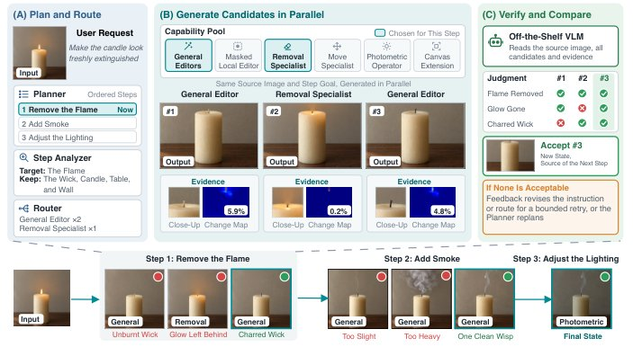
EditAgent 流程示意：底层是一个请求被拆成有依赖的步骤、每步接受的结果成为下一步的输入；上层放大第一步，规划器排序，分析器与路由器选出适用方法，各方法从同一源图并行生成带验证记录的候选，现成 VLM 一次性比较后接受其一或返回反馈。
解决了什么问题。现有智能体式图像编辑器把复杂请求拆成步骤后，一旦某步失败，往往仍用同一套狭窄工具重试，评判模型也只对着单张输出「用眼睛」打分。作者认为这类系统受限于两个空间：智能体能做什么（动作空间），以及评判模型能看到什么（观察空间）。在自建的 600 组、30 类编辑的诊断基准上，通用编辑器有 42.7% 的组里没有任何可用结果。
方法。EditAgent 把每一步路由到通用编辑器与专用方法（掩码局部编辑、物体移除与移动、光度与几何算子等），各方法从同一源图并行生成候选。每个候选附带一份验证记录，包括变化图、局部放大图、颜色与几何测量值，以及代码检查结论，让通用 VLM 评判时知道哪些性质已验证、哪些仍需目视判断。评判以一次 listwise 调用完成全部候选的比较，接受其一或返回反馈；多轮场景还加入历史检查，检测后续编辑是否破坏了早期编辑并执行一次修复。
关键结果。诊断基准上，在含至少一个可用候选的 515 组中，加入 listwise 比较与验证记录把 Qwen3.8-27B 的 Winner-Set Hit@1 从 71.6% 提升到 81.3%，比最强的微调奖励模型 EditScore-72B 高 6.5 个点；七个现成 VLM 评判器提升 6.3 至 9.3 个点，Qwen3.8-Flash-Next 达到 82.8%。在 144 个 Complex-Edit 样本的盲评中，专业修图师在 130 次有偏好的比较里 102 次选择并行搜索、28 次选择顺序精修，即 78.5% 偏好并行，且 VLM 调用不超过后者的一半（至多 2 次对 4 次）。以 Qwen-Image-Edit-2511 与 FLUX.2-klein-9B 为骨干，EdiVal-O 第三轮分别从 47.64 升到 55.46、从 53.20 升到 59.45（1024 像素设定的 Qwen 骨干从 59.80 升到 62.58），ComplexBench-Edit 平均分分别提升 6.43 与 3.06 分；专用方法贡献了 19% 至 31% 的被接受步骤。作为数据引擎，用其约 25.7K 条全接受会话微调，EdiVal-O 第三轮分别提升 1.95 与 2.00 个点。
为什么值得看。它把「换方法、换看法」变成可操作的工程原则，说明在图像编辑里扩大工具池与给评判模型提供证据，比反复精修同一个输出或微调专用奖励模型更划算。被接受的会话还能当作数据引擎，反哺更强的单模型编辑器。
局限 / 存疑。推理时间约为单体编辑模型的 10 倍，且性能本质上受限于底层各编辑方法的能力上限；此外论文内部评判与两个基准的自动评测都使用 Qwen3.8-27B，虽然作者用 Gemma-4-31B 复测缓解了偏差疑虑，诊断基准的请求也是由 VLM 生成、仅 600 组。
生成式 AI
AI 智能体 Agent / 自主智能
计算机视觉 CV
alphaXiv · arXiv
真实用户改码基准：最强模型仅完整通过26.4%
从26,314个真实编程会话筛出273个改码任务，最强模型平均通过69.9%的验收标准，全部通过仅26.4%。
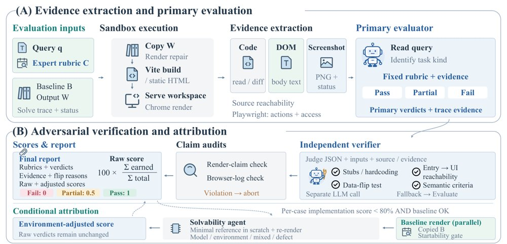
从产物到判定：先构建并渲染候选、采集源码与浏览器证据并给隐藏标准打分，再由独立验证器挑战正向判定、审计必需证据并聚合分数，并行的基线与可解性检查用于失败归因。
解决了什么问题。现有网页编码基准多基于参考页面重建、合成编辑操作或版本历史抽取的改动对，缺少从真实用户编程会话中回收、同时覆盖局部多模态编辑与跨组件仓库协同修改的复合修订任务。论文还指出，执行方式会显著改变测得的完成度：在同样的150个WebCompass-edit任务上，qwen3.7-plus从单次执行的73.6%提升到agentic执行的95.1%，相差21.5个百分点，因此只报单一分数容易误读。
方法。作者构建Co-Design Bench，含273个任务与2,331条专家撰写、对解题者隐藏的验收标准，分多模态编辑（ME，100个任务）与仓库编辑（RE，173个任务）两条轨道，每个任务都配有可运行的编辑前应用、归一化请求和可选附件。评测采用judge-then-refute协议：先由固定的agentic评估器依据源码差异、渲染页面和Playwright轨迹对每条标准给出Pass/Partial/Fail，再由独立的LLM验证器专门反驳正向判定（查桩代码、硬编码、不可达入口等），最后做证据审计——视觉类声明必须有成功渲染与截图，交互类声明必须有录制的浏览器动作，缺证即在聚合前中止。
关键结果。在统一使用Claude Code harness、限时3小时与120轮的前提下，十个模型端点跑满2,730个模型–任务对。最强的gpt-6-astra平均严格完成度为0.699（69.9%），但只有26.4%的任务全部标准通过；分轨道看ME为0.754、全通过41.0%，RE为0.667、全通过17.9%，也就是说约73.6%的任务至少残留一条未满足的标准。RE轨道上，跨三或四种编辑类型的任务汇总严格完成度为0.591，低于只跨一或两种的0.654，差6.3个百分点，且十个端点在宽编辑组上无一例外更低。评估器敏感性检查中，换用三个替代评判模型后绝对分数最多偏移0.053，kimi-k3与Qwen3.8-27B在两条轨道上的相对顺序保持不变。
为什么值得看。它把「通过多少条要求」与「整个任务是否交付」拆成两个指标同时报告，说明高分覆盖度可以掩盖大量未完成交付，为真实用户应用修订场景下的coding agent提供了可追溯到证据的评测口径。
局限 / 存疑。评分主体仍是LLM评判加LLM反驳，论文自承无法消除判断错误，人工只由两位前端专家抽查了200个任务–模型输出；任务使用固定请求，不模拟执行过程中的进一步用户反馈。此外跨harness实验显示模型排序会随执行框架反转（ME上Spearman ρ=-1.00，两模型差距在10.0至16.2个百分点间摆动），分数与harness强耦合；模态与编辑广度的分组比较也被明确称为描述性而非因果。
AI 智能体 Agent / 自主智能
alphaXiv · arXiv
VibeGame：从提示词生成可玩2D游戏
南京大学等提出VibeGame，用AI原生2D引擎和对抗智能体团队，把提示词变成可运行、可编辑的游戏项目。
VibeGame从文本或多模态提示生成并编辑多种2D游戏类型的示例。
解决了什么问题。游戏开发需要同时协调代码、场景、素材、动画、物理和配置，还要通过实际试玩验证整体行为。现有LLM智能体多把运行检查留到最终评估，或只验证游戏能否构建和启动，难以发现只有在游玩中才暴露的问题。
方法。VibeGame把项目状态表示为带模式校验的结构化文本，并提供逐帧同步的运行时控制，让智能体暂停、步进、注入动作和截图检查。其八角色对抗智能体团队把实现与审计、试玩、评审分离，并在项目通过后以免训练自进化提炼骨架、模块和协作契约。
关键结果。在GameCraft-Bench子集30个任务上，以GPT-6.1-Sol为评审时，VibeGame（P2G）总体得分72.99，高于最强基线Codex（P2G）的68.80，提升4.19分；用GPT-5.6-Luna时总体49.99，比最强基线38.29高11.70分。消融显示去掉AI原生引擎总体从53.45降至43.12，去掉对抗评审角色降至48.82；加入GPT-6.1-Sol进化经验后GPT-5.6-Luna升至56.37（+2.92）。30人盲测共300次判断，总体人类胜率平均72.7%，15类游戏中13类超过各自模型最强基线。
为什么值得看。它把“可运行、可检查、可迭代”的游戏项目作为智能体输出，并用运行时试玩补足静态代码检查看不到的问题，为游戏生成基准提供可复现的工程路径。
局限 / 存疑。仅在2D游戏上验证，未覆盖复杂3D场景或可长期游玩的完整商业游戏；作者也观察到连续开发不同类型游戏时，自进化积累的经验反而可能拉低智能体表现。此外，评审模型从GPT-5.5换为GPT-6.1-Sol会改变绝对分数和排名，且因引擎改为Phaser，结果不能与原始GameCraft-Bench直接比较。
生成式 AI
AI 智能体 Agent / 自主智能
alphaXiv · arXiv
视频理解模型不会主动提问，流式模型近乎失效
新基准 AskStream 把「提问」纳入动作空间：最强离线模型 Ask-F1 为 52.18%，流式模型仅 7.22%
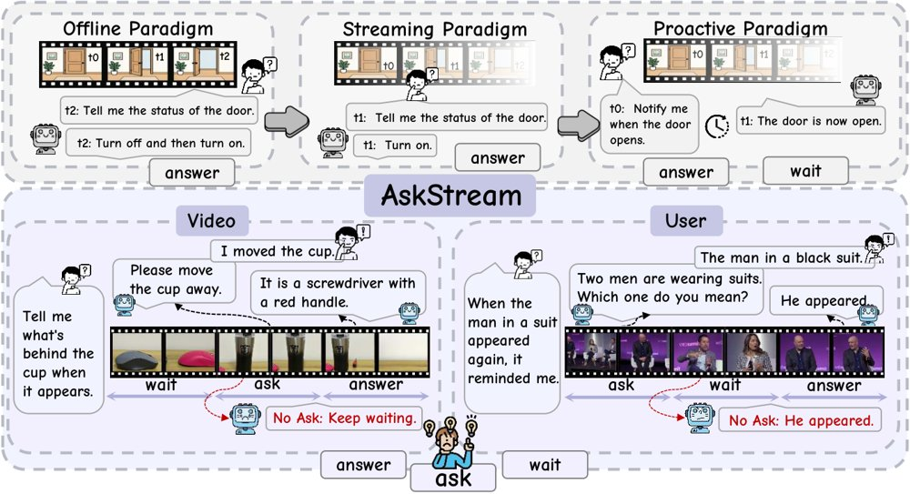
交互范式的演进：AskStream 在原有的「等待」与「回答」之外加入「提问」动作，使模型在作答前能主动向视频或用户索取缺失信息。
解决了什么问题。现有的主动式视频交互范式默认「回答问题所需的信息一定会在流中出现」，因此模型的动作空间只有等待和回答两种。但现实中的不确定性既可能来自视频（画面模糊、证据缺失），也可能来自用户（指代不清），这会让模型无限等待或强行编造答案。作者因此主张把「提问」作为第三个动作引入，研究模型应当在何时、就什么内容发问。
方法。论文提出 AskStream 评测框架，把交互动作空间从「等待/回答」扩展为「等待/回答/提问」，并区分来自视频和来自用户的两类不确定性。评测分为离线与流式两种设定，覆盖多选与开放式两种回答形式，指标为 Ask-F1 以及分别衡量提问与回答的子分数 S_ask、S_ans；此外还用逐步加入 oracle 信息的消融实验，定位模型在何时提问、问什么、何时回答这三个阶段中哪一环出错。
关键结果。多选设定下，离线模型中 Gemini-3.8 Flash 表现相对最好，在 KVEM、WUQ、UPC 三个子任务上分别为 37.17%、43.10%、81.36%，总体 Ask-F1 为 52.18%，但其 S_ask 明显低于 S_ans，说明提问是瓶颈；流式主动模型在多数子任务上得零分，表现较好的 AURA 也只有 7.22% Ask-F1。开放式设定整体明显下降，Gemini-3.8 Flash 的 Ask-F1 为 29.19%（S_ask 23.34%、S_ans 38.97%），AURA 仅 4.01%。在不确定性分析中，Qwen3.5 9B 在 78 个视频的 130 个五选一事件上，输入模糊时准确率为 42.3%，在问出关键证据后升至 62.3%，接近完全清晰输入的 63.1%。
为什么值得看。它把「主动提问」从概念口号变成可量化评测的能力维度，并用数据说明当前模型在信息缺失时基本不会求助，这对构建需要长时间监控、异常告警等真实场景的视频智能体是明确的短板信号。
局限 / 存疑。这是一篇以基准和评测为主的工作，论文没有提出能提升提问能力的新方法，因此只诊断问题、不解决问题。不确定性分析只在 Qwen3.5 9B 上、基于 78 个视频的 130 个事件完成，规模有限；开放式评测使用 Gemini-3.8 Flash 作裁判，作者仅用 300 轮人工标注做一致性校验，绝对分数的可靠性仍需谨慎看待。
基础大模型 & 基础模型底层研究
AI 智能体 Agent / 自主智能
alphaXiv · arXiv
WN 预训练收益主要来自有效学习率轨迹
匹配有效学习率轨迹后，WN 与权重衰减的训练损失动态大幅重合；作者据此提出 AIR 调度。
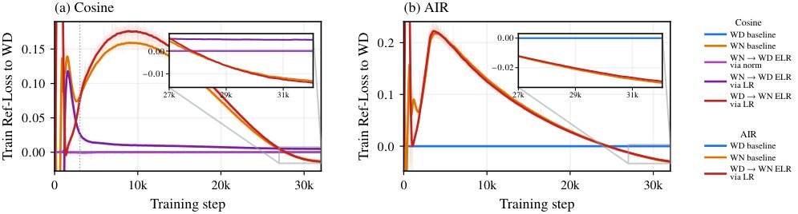
ELR 匹配使 WD-WN 的训练损失动态趋于重合：图中为同一步下相对 WD 基线的训练损失差（零为参考），箭头标出通过回放 WD 范数或按块缩放 LR 匹配的 ELR 目标。
解决了什么问题。权重归一化（WN）被视为权重衰减（WD）的替代方案，近期研究报告了可观的预训练损失收益。但这些收益究竟来自归一化本身，还是来自其诱导的有效学习率（ELR）轨迹，并不清楚。若只关注名义学习率，调度设计可能错过真正起作用的变量。
方法。作者通过匹配 ELR 轨迹比较 WN 与 WD，发现两者的训练损失动态大幅重合。据此提出 AIR（Affine Inverse-square-Root decay），将理论推导的 1/√t 衰减与仿射调整结合，在有限训练时程内满足指定的峰值和终端学习率。作者还识别出后期 ELR 调度是收益关键，因为共享的后期调度会削弱早期学习率选择的影响。
关键结果。在 128B token 的 Mixture-of-Experts 预训练中，AIR 在训练损失、下游性能和超参鲁棒性上优于 cosine 及其他候选调度；在累计学习率匹配时，终端训练损失相对 cosine 降低约 0.01。
为什么值得看。若 ELR 是更原则性的调度对象，学习率调度器的设计、比较与复现都应以 ELR 为中心，而不是只看名义学习率；这也为把 WN 的收益迁移到 WD 提供了可操作路径。
局限 / 存疑。ELR 匹配使损失动态大幅重合，但并未完全重合，材料也未拆解归一化本身可能残留的作用。实验只覆盖 128B-token 的 MoE 预训练，跨模型规模、架构与多种子方差的结果尚未给出。
基础大模型 & 基础模型底层研究
alphaXiv · arXiv
IDM：用特征矩约束改进一步生成
论文把内部DMD损失与EMA特征空间的矩匹配结合，试图在一步/少步文生图中保留提示细节。
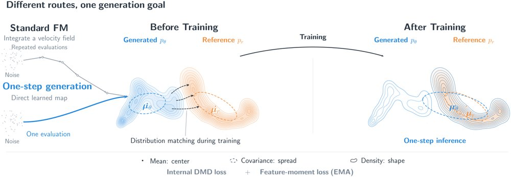
图示对比多步迭代采样与一步直接噪声到数据映射，并展示IDM在生成器EMA特征空间联合内部DMD损失与特征矩损失。
解决了什么问题。一步和少步文生图必须在很少的细化机会下准确呈现提示指定的细节，长文本渲染尤其能暴露这一难点。DMD用score差把生成分布拉向参考分布，但显式矩约束能否改善这种学到的score监督仍不清楚。
方法。作者将reverse-KL场分解为高斯矩分量与非高斯残差，从中识别可显式约束的统计量。方法沿用内部velocity分支估计score差，避免单独的fake-score网络，并在生成器的EMA特征空间加入特征矩损失，与内部DMD损失联合训练。
关键结果。实验在单张A100（BF16）上报告吞吐（batch=10）和延迟（batch=1），并比较约100-NFE的Z-Image基线与8-NFE的Z-Image-Turbo；两个提示在1和2 NFE下评估，GenEval按类别与总体打分。节选未给出GenEval、FID、CLIP的具体数值，论文未给出具体数字。
为什么值得看。若显式矩约束确实补足DMD的监督，少步生成有望在降低推理成本的同时改善长文本细节。它也为分布匹配蒸馏提供了加入统计约束的训练思路。
局限 / 存疑。节选缺少GenEval、FID、CLIP等表格数值，系统比较和消融的增益无法独立核验；此外，协方差收缩命题只适用于实现条件均值的回归器，不能据此断言一步生成器普遍低估方差。
生成式 AI
计算机视觉 CV
alphaXiv · arXiv
SQAM：标量伴随匹配微调流策略
把流策略的精确伴随近似为标量形式，省去每步向量-雅可比积，并在OGBench最难任务和真实双臂机器人上验证。

三个真实机器人操作任务：翻塑料袋、把吸管放进杯子、把水果放进锅并盖上盖子。
解决了什么问题。流策略能表达多模态动作，但用离策略强化学习微调并不容易：策略要经过多步采样才产生动作，而critic只评价最终动作。伴随匹配可把价值梯度回传到每个流步，却要在每步计算向量-雅可比积，成本随流步数和策略规模增长。
方法。作者观察到预训练流策略的批平均速度雅可比集中在对角线上，于是把雅可比近似为标量乘单位阵，得到闭式标量伴随：只用最终动作处的critic梯度乘以流时间。进一步在策略自己生成的动作上给critic加价值惩罚，构成SQAM。
关键结果。在OGBench 50个任务、8个随机种子、离线1M步设置下，SQAM总体成功率75%，高于最强基线TRQAM的68%；在四个最难域上比各域最强基线高18到35个百分点，其中cube-quadruple从19%提到54%。真实双臂机器人上，SQAM离线到在线后在三个任务上分别成功25/30、15/30、13/30，SFT为15/30、7/30、4/30。
为什么值得看。它说明流策略的强化学习微调未必要精确回传每步雅可比，粗略的标量伴随已够用，瓶颈可能更多在critic的价值学习。
局限 / 存疑。标量伴随依赖“批平均雅可比近似对角”的经验观察，论文未解释该结构何时成立；价值惩罚系数需逐域调，cube-double上还会降低离线表现，真实机器人也只验证了三个单任务。
强化学习 RL & 序列决策
alphaXiv · arXiv
六边形图元Hexels：紧凑场景渲染与重建
论文提出以带一阶颜色场的六边形面片作为统一图元，在匹配模型内存下于三项三维基准上超过2DGS与Triangle Spla
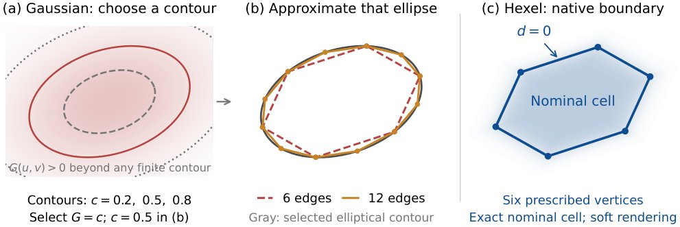
示意图展示六边形单元的原生顶点与边界，以及用六边形/十二边形高斯代理近似其权重场的过程（仅为名义单元几何，两种渲染器实际都使用软权重）。
解决了什么问题。辐射场与splatting类方法在新视角合成和三维重建上进展很快，但显存与计算开销限制了它们在资源受限设备上的使用。已有图元往往顾此失彼：普通高斯与三角splat每个图元只存一个视角相关颜色，空间变化要靠大量重叠元素堆出，造成严重overdraw；而引入逐图元纹理或神经外观场的方法又把这些复杂度转移到纹理、网格或解码器上。作者因此试图在有限表示预算下同时兼顾表面几何精度与外观表达能力。
方法。作者将图元本身作为优化对象，提出Hexels：一块仿射六边形平面片，内部用一阶（仿射）空间颜色场描述平滑的外观变化，从而以单个紧凑图元覆盖较大且近似各向同性的局部表面区域。训练从稀疏COLMAP点出发迭代30K次，固定配置保留初始图元数量。致密化配置采用混合clone/split生长与基于贡献的剪枝，上限为2M个图元；V1、V2、V3三种配置每个图元分别占80、116、260字节，且结果均未使用训练后的量化或压缩。
关键结果。在Tanks and Temples（10场景）、Mip-NeRF 360（9场景）和DTU（15场景）共34个真实场景上，匹配模型内存时Hexels V1的PSNR比2DGS高4.53–7.38 dB，比Triangle Splatting高1.70–2.90 dB，其中Mip-NeRF 360上平均增益为6.99 dB。渲染速度为377.8–830.8 FPS，是2DGS的1.54–1.87倍，峰值训练显存最多比2DGS少3.6倍。DTU表面重建的平均Chamfer距离为0.978 mm，而内存匹配与图元匹配的2DGS分别为1.375 mm和1.449 mm；每像素所需图元数与高斯类方法相比，平均混合次数减少71–80%。在匹配图元数量时，学习状态最多少2倍，渲染最多比2DGS快2.31倍。
为什么值得看。它把效率改进落在图元设计本身，而不是依赖纹理图集、神经解码器、剪枝或量化，因此对显存受限的端侧新视角合成与显式表面重建更直接可用。作者还实现了直接评估训练时同一表示的渲染器，并计划与训练代码一并开源。
局限 / 存疑。一阶颜色模型无法表达单个图元内的任意纹理，高频或非相关的表观需要更小的图元或更丰富的颜色模型，从而削弱利用局部平滑性带来的收益；稀疏初始化还可能留下覆盖不足的区域，独立表面单元也不构成水密网格，小投影尺寸或掠射视角下仍可能出现采样伪影。作者也承认Hexels并非在所有指标上优于所有基线：例如无约束2DGS在DTU上的Chamfer距离为0.794 mm，优于Hexels的0.978 mm。
计算机视觉 CV
alphaXiv · arXiv
CoSTA 解耦语音生成与合成词表
CoSTA 保留原分词器与解码器，用压缩生成词表缩短语音 token 序列，实现约 1.7 倍生成加速。
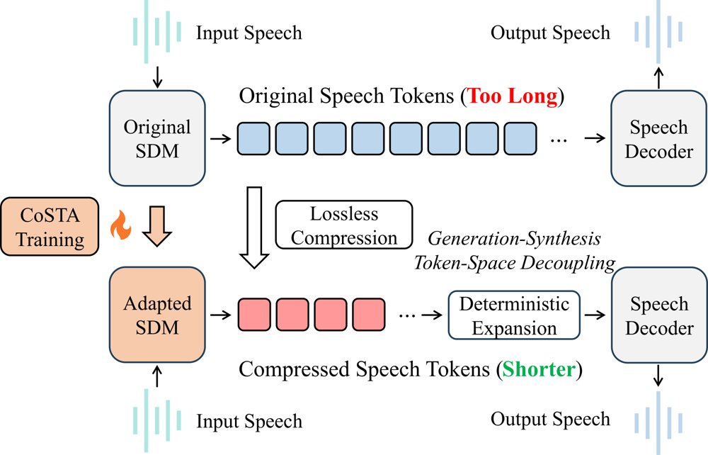
CoSTA 将生成词表扩展为压缩表示，并在合成前确定性还原到原始语音 token 空间。
解决了什么问题。现有口语对话模型通常让自回归生成与语音合成共用同一套语音 token 空间，序列过长导致推理成本高。降低 token 率虽能缩短序列，但可能带来压缩—质量权衡，且替换分词器往往需要连带重训解码器与模型。CoSTA 要回答的是：能否在保留原分词器和解码器的前提下，解耦生成词表与合成词表。
方法。CoSTA 在生成端引入 BPE 压缩表示，通过均值初始化词表扩展、发音适配和对话适配，把压缩 token 加入生成词表。生成结束后，它再确定性展开回原始语音 token 空间，交由原解码器合成。默认新增 80K 词表单元，约占原模型参数 6%；适配使用中英各 300 小时 TTS 数据和每语言约 5 万条对话样本。
关键结果。在双语语音对话基准上，CoSTA 实现约 1.7× 扩展语音 token 生成速度、更低全响应延迟和更高吞吐，同时保持回复质量。词表从 10K 增至 80K 时，生成 token 压缩率 ρg 从 76.66% 降到 67.50%，扩展 token 速度从 78.67 升至 103.03 tokens/s；增至 160K 时 ρg 降至 63.62%，但速度仅比 80K 高 1.1%（104.18 tokens/s），G-Eval 从 81.36 降到 78.87，UTMOS 下降 0.02。
为什么值得看。它提供了一条后处理式效率路径：不改原分词器和解码器，就能缩短自回归生成序列，并与低速率分词互补。对已部署的 SDM 而言，这降低了提速的替换成本。
局限 / 存疑。作者也承认改进并非在每个指标和数据集上一致，压缩率、解码效率与质量之间存在实际权衡：160K 词表虽把 ρg 降到 63.62%，但 G-Eval 从 81.36 降到 78.87，UTMOS 下降 0.02。主实验基于 8B Step-Audio 2 mini 和 URO-Bench 的 12 个数据集，跨架构迁移结果属于补充验证。
语音与音频 AI
alphaXiv · arXiv
扩散VLM解码只在需要时才处理图像
LOWN 每步先用仅文本前向检验图像条件下的锚点预测：一致就跳过图像，不一致才做一次完整前向。
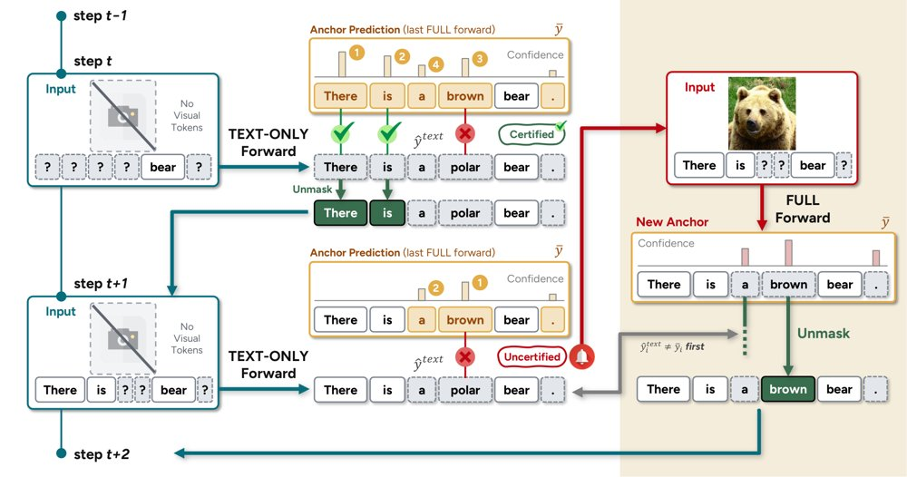
LOWN 概览：TEXT-ONLY 前向与锚点预测一致即认证并跳过图像，认证前缀不足时触发 FULL 前向刷新锚点，并优先 unmask 两次前向分歧的位置。
解决了什么问题。扩散视觉语言模型在每一步去噪都对整个输入做一次前向，而在作者研究的基准上视觉 token 占输入的 89–97%，于是大部分解码算力都花在反复处理同一张图上。视觉 token 剪枝能减少每次前向处理的 token 数，但被删掉的信息无法找回，剩下的图像仍要每一步都处理。
方法。LOWN 把最近一次带图像前向（FULL）的 top-1 预测和置信度存为锚点，每一步先跑一次仅文本（TEXT-ONLY）前向，按锚点置信度排序，取与锚点一致的最长前缀作为「认证」结果。当认证长度达到基线每步 unmask 的 token 数 k 时，该步跳过图像并直接 unmask 整个前缀；不足 k 时触发一次 FULL 前向刷新锚点，并优先 unmask 两次前向预测不一致的位置。整个规则不需要训练，也没有需要调的超参阈值。
关键结果。在十个基准上，LOWN 以 LLaDA-V 基线 0.353×（35.3%）的解码 FLOPs 保留 99.6% 的平均得分，在其中八个基准上优于给定同等或更高算力的加速方法，生成时间平均减少 57.4%、最多 73.2%。测量显示图像平均只在 22.8% 的步骤上改变被 unmask 的 token（MMBench 7.9%，DocVQA 43.8%），FULL 与 TEXT-ONLY 在 83.4% 的待 unmask 位置上给出一致的 top-1，85.0% 的最终 token 在被 unmask 前就已是 top-1 预测。规则原样迁移到 LaViDa 时以 0.174× FLOPs 保留 99.7% 得分；在 VidLaDA-8B 上，EgoSchema 与 MLVU 分别用 0.255× 和 0.272× FLOPs，得分 60.2 与 43.3（基线 60.6 与 41.8）。与 Fast-dLLM 缓存组合后 FLOPs 再降 44.1–58.9%，但三项任务得分均低于单独使用 Fast-dLLM，LLaVA-Bench 上低 5.0 分。
为什么值得看。它把「这一步需不需要看图像」变成解码时可逐步判定的问题，与减少单次前向 token 的剪枝、降低单次前向成本的 KV 缓存正交互补。对需要在固定算力下部署扩散 VLM 的系统而言，这提供了一条不必牺牲视觉信息的新加速维度。
局限 / 存疑。认证复用的是与文本前向一致的锚点预测，仍可能与全新 FULL 前向不同：在基线轨迹上，一步旧锚点的认证结果有 4.1–11.0% 被推翻，锚点老到八步时 DocVQA 升至 25.3%，LOWN 自身 TEXT-ONLY 步骤上的接受误差为 2.2–4.7%。图表与文档阅读类任务视觉依赖持续，节省更少（DocVQA 上有一个样本只降到 0.90×），且 FULL 前向次数由解码过程决定，成本无法在解码前设定。
生成式 AI
AI 工程、推理部署、系统方向
alphaXiv · arXiv
基准是难度上的经验测度：两类失效模式
论文把基准视为难度轴上的经验测度，形式化测度错配与覆盖空洞两种失效模式，并给出诊断指标与补洞方法 BenchFill。
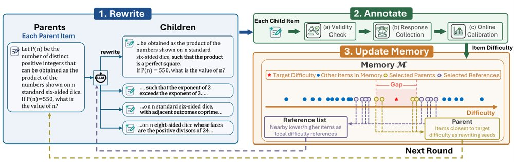
BenchFill 概览：迭代地把父题目改写为子变体、标注其难度，并更新记忆以指导下一轮补洞。
解决了什么问题。基准分数既被用来做排行榜比较，也被用来监控训练进展，但结论不只取决于模型能力，还取决于题目在难度轴上的分布。如果基准的难度权重与使用者关心的目标分布不一致，同一对模型可能得出不同排名；如果难度轴某一段几乎没有题目，模型在该区间的局部进步就几乎不会反映到总分上。作者称这是首个把「测度错配」与「覆盖空洞」作为基准评估基本失效模式加以形式化的工作。
方法。作者把每道题看作在自身难度处贡献相等评估质量的点，于是基准成为难度轴上的经验测度：用基准测度与目标难度分布之间的 Wasserstein 距离衡量测度错配，用相邻难度点之间的最大间隔衡量覆盖空洞，并给出理论保证；题目难度用项目反应理论（最终采用 1PL）估计。诊断之后是 BenchFill：用 LLM 把已有题目改写为指定难度的新变体，迭代搜索并标注难度、更新记忆，默认填补当前最大间隔，候选先经 GPT-5.4 自动校验正确性，再由人类专家审核。
关键结果。实证覆盖 7 个领域的 25 个常用基准：其中 10/25 的难度分布偏差指标 DDM ≥ 0.10，意味着要把经验难度分布搬到同规模均匀参考分布，平均需移动至少 10% 的难度量程；8/25 的最大间隔 ≥ 0.10，9/25 的前五大间隔之和 ≥ 0.30，AIME24 与 AIME25 的前五间隔和接近 0.5。校准实验把源基准排名与留一参考排名的一致性从 Spearman 0.890 提升到 0.930、Kendall 0.802 提升到 0.848（Minerva-Math 原始仅 0.601）。补洞实验在 8 个基准上各针对 3 个最大间隔、共 24 个目标间隔，使用 MiniMax-M2.7（温度 1.0、最多 8 轮、每轮 4 个父题各改写 4 个子题）；24 个最终题目全部通过 GPT-5.4 校验与人工复核，其中 1 个因参考答案错误被重新生成。在轻度 SFT 后的小规模检验中，Original+BenchFill 在 3/3 个案例里以单侧分层随机化检验（p<0.05，每题 32 次采样）检出正向增益；至于每个基准仅插入 3 题时分数变化的具体幅度，论文未给出具体数字。
为什么值得看。它提醒读者：排行榜分数是在基准自身的难度加权下做的比较，而用题目数量有限的小基准监控强化学习训练，可能系统性低估局部进步。两个诊断指标可以直接用来体检现有基准，或按目标分布做校准。
局限 / 存疑。全部结论都建立在 IRT 估计的单维难度上，1PL 的拟合诊断虽被作者认为最稳定，但难度估计误差会直接传导到两个指标；「目标难度分布」在很多场景下仍需人为指定，分布不均匀本身并不等于错误。补洞与增益检测的实验规模也很小——只有 8 个基准、24 个间隔、3 个增益案例，且改写全部由单一 LLM 完成，结论能否泛化到其他基准家族尚不清楚。
基础大模型 & 基础模型底层研究
因果推断、统计学习、理论机器学习
alphaXiv · arXiv
SO-101 仿真基准：策略排名可迁移到真机
SO-101 语言条件空间操作基准：五项策略在仿真与真机排名完全一致，但仿真成功率高出 9–31 个百分点。
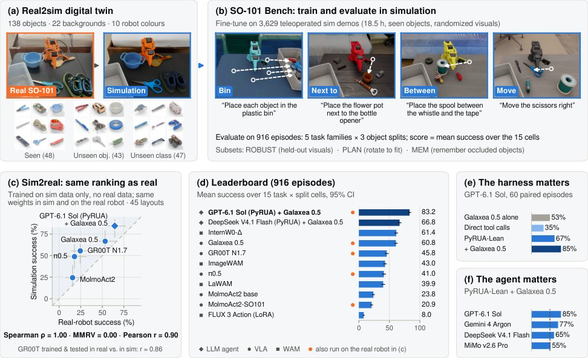
SO-101 Bench 总览：(a) 真实 SO-101 与它的数字孪生；(b) 四类任务；(c) 五个未用真机数据训练的策略在真机上保持相同排名；(d) 排行榜；(e) harness 消融；(f) 语言模型的影响。
解决了什么问题。SO-101 这类低成本手臂（零件约 120–150 美元，而 ALOHA 单臂约 4,900 美元）已成为机器人学习最常见的入口，但据作者所知，没有任何已发布策略能开箱完成语言条件约束下的空间操作任务。今年发布的 SO-101 基准全部只在真机硬件上运行，任务简单、留出物体少，结果还受具体装配影响（舵机偏移、相机错位、物体磨损）；而 LIBERO 等常用仿真套件已接近饱和——一个 0.54M 参数策略就能达到 95.1%。
方法。作者在 Isaac Lab 中搭建真实 SO-101 装置的机械臂数字孪生，含 138 个家用物体，分 seen、unseen-instance、unseen-class 三档（其中 37 个未见类物体私有以防测试集泄漏），四类任务记为五个任务族，主评测为 916 个经可行性检查的回合，另设 ROBUST、PLAN、MEM 三个子集。所有学习型策略都在同一份 3,629 条仿真遥操示教上、以相同的 36 小时 × 4×A100 预算微调，并在独立的 39 回合验证集上选检查点。排名验证分两步：先比较独立训练的真机专用与仿真专用 GR00T N1.6 的难度结构（15 个任务×划分单元上 Pearson r=0.86），再用同一份权重在孪生与真机上跑五个策略。
关键结果。主评测 916 回合中，最好的学习型策略 InternW0-Δ 得 61.4（95% CI [58.5, 64.1]）、Galaxea 0.5 得 60.8（[57.9, 63.6]），统计上并列；它们在单物体装箱上达 90–93%，但 next-to 与 between 只有 34–44%，且没有任何学习型策略在需要旋转对位的 PLAN 子集上超过 17%。由 GPT-6.1 Sol 写代码、把抓取交给 Galaxea 0.5 的 LLM agent 得 83.2（[80.7, 85.7]），PLAN 达 75%。sim2real 方面，五个策略在 45 个匹配布局上仿真与真机排名完全相同（Spearman ρ=1.00，MMRV=0.000，95% CI [0.000, 0.169]），但仿真对每个策略都高估 9–31 个百分点；真机上 agent 为 64%（29/45），Galaxea 0.5 为 53%（24/45），McNemar p=0.30。60 个配对回合的 harness 消融显示：直接工具调用 35%（21/60）、PyRUA-Lean 67%（40/60）、再交给 Galaxea 0.5 抓取 85%（51/60），而 Galaxea 0.5 单独为 53%（32/60）。
为什么值得看。它给出了一条可复现、成本远低于真机的评测流程，也是目前少数在“只用仿真数据训练的策略”上验证过 sim2real 排名的 SO-101 基准，意味着社区可以用孪生先筛策略、再用真机确认。对做 VLA/WAM 的读者，结论也很直接：抓取熟悉物体已基本解决，空间放置、未见类别和旋转对位仍是空白。
局限 / 存疑。sim2real 研究只覆盖 5 个策略、45 个布局、单一真实环境，MMRV 的 95% 置信区间为 [0.000, 0.169]，作者自承这只能算“排名正确”而非精确校准，仿真成功率应读作真机性能的上界。所有学习型策略在固定 36 小时预算下比较，MolmoAct2 只跑了 0.5–0.6 个 epoch、FLUX 3 Action 只有 0.2 个 epoch，低分不代表能力上限；而且 agent 的时限只计仿真或控制时间，模型推理时机械臂静止，真机中位实际耗时 197 秒，而 Galaxea 0.5 为 38 秒，实时成本被掩盖。
机器人 & 具身智能
alphaXiv · arXiv
不看测试分数：用训练日志决定何时换题
A-RSI 只读训练日志里的奖励与准确率变化，在学信号衰退时换掉整个任务池；11 个基准平均分从 57.77 升到 61
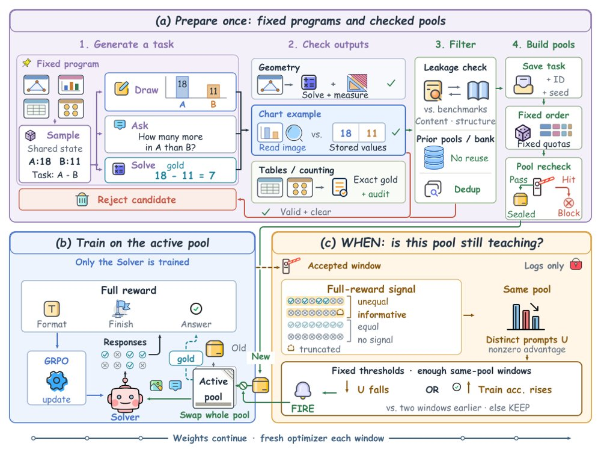
A-RSI 流程总览：任务模板、候选池和替换池在训练前固定，控制器读取训练日志决定何时启用新池，只有 Solver 策略被优化。
解决了什么问题。递归自我提升不只取决于生成什么新任务，还取决于何时该换掉已经学不动的任务池；已有方法多关注前者，容易在信号衰退的池上继续消耗更新。另一处隐患是训练目标常来自自一致性或多数投票，模型的错误预测会变成下一轮的标签。作者把这两个问题拆开：训练动态决定何时换，新任务的答案则要能独立核查。
方法。A-RSI 在训练前固定一套由模型撰写程序构成的任务库，程序生成多模态题目并直接算出参考答案，同时准备好互不重叠的替换池，每个池 400 题。训练时 Solver 用 GRPO 在活跃池上学，奖励由正确性、格式和终止三项组成。控制器只读训练侧的准确率和组内相对优势信号，判断保留当前池还是启用下一个未用过的池，换池时保留最新权重；全程不使用外部训练样本或人工答案标签，也不查验证集和测试集分数。
关键结果。主实验用 Qwen3-VL-8B-Instruct，八个续训窗口、每窗 100 次更新，用 800 个新任务把 11 个基准的等权平均（Macro11）从 57.77 拉到 61.05。MiMo-VL-7B-SFT 上随机刷新终点为 60.71，持续复用为 60.01，差 +0.70 分，仅比每窗刷新高 +0.02、比周期刷新高 +0.18；作者明确指出这样小的单次运行差距不足以证明时机优势。在 MathVision 上该方法得 51.45 分、截断率 8.36%，其他刷新方案为 18%–22%。同一协议下，基于难度、控制器和 rollout 的选择器都没有跑赢随机选择；MiMo 的随机刷新端点也超过各对照臂。
为什么值得看。它给出一个便宜的可复用判据：让模型自己的训练日志决定数据何时作废，而不依赖测试集或人工设计的难度曲线，这对持续学习的工程闭环有直接参考价值。同时它把奖励规则和生成答案分别做了自动验证与独立审计，为「自生成数据」的可信度提供了可操作的检查范式。
局限 / 存疑。每个实验臂只训练一次，作者自己承认 MiMo 上 +0.70 这类差距不构成时机优势，下一步需要跨随机种子复现和固定调度的随机对照，16k 评测也未完成。程序库只覆盖几何、图表、表格和计数，缺函数图像、数值估计与空间任务；参考解答审计中 hr 组仍有 5 例「第三高」并列，不能声称标签零歧义；部分零数据增益其实来自学会在长度预算内收尾。
基础大模型 & 基础模型底层研究
alphaXiv · arXiv
用频域掩码拆解双参考图的个性化生成
Dual-FDM 在频域用掩码替换中、低频分量，把定制参考与风格参考拆开，同时处理定制风格迁移与颜色风格迁移。

图 1：Dual-FDM 的生成示例，(a) 为定制参考（左）与风格参考（上）下的 Dual-FDM_cust 结果，(b) 为颜色参考（左）与风格参考（上）下的 Dual-FDM_cost 结果。
解决了什么问题。个性化图像生成包含两个子任务：图像定制要把参考图前景替换进文本提示，风格迁移要把参考图风格注入背景同时保持前景与文本对齐。已有方法在去噪过程中常出现文本失配：定制方法的稠密图像参考压制了稀疏的文本提示，风格迁移的稠密风格信息则泄漏到前景，布局类方法虽能保住前景身份，却因显式分割前景和背景而破坏整体一致性。作者认为这些问题的根源是去噪过程中多个频带纠缠：低频主要承载颜色、中频编码全局结构、高频对应局部纹理，而早期高噪声阶段主要由低频和中频主导，二者互相强化，形成对文本提示的压制。
方法。作者提出 Dual-FDM，把参考图的前景或背景经离散余弦变换映射到频域，用从左到右的掩码逐步分离低、中、高频带。为了取到参考图的背景，方法对解耦交叉注意力中的 key 投影矩阵做奇异值分解，并把奇异值取倒数构造背景矩阵，从而压制前景、增强背景。定制风格迁移（Dual-FDM_cust）用定制参考的前景替换风格参考背景的中频带；颜色风格迁移（Dual-FDM_cost）用颜色参考的前景加背景替换风格参考背景的低频带，替换后的频带作为 key 和 value 重建去噪图像的 query。此外，方法用替换频带的信息熵比值自适应划分早期与晚期去噪时间步。
关键结果。在 DreamBench、TI benchmark、DreamBench++、StyleBench 等组合数据上，Dual-FDM_cust 在六项指标上均取得最优：CLIP-T 0.3194、CLIP-TC 0.5031、CLIP-CS 0.6687、IR 5.3487、HPS 2.6007，相比最强的 [MS-Diffusion+CSGO] 组合（CLIP-T 0.3123、CLIP-TC 0.4680、IR 4.2023、HPS 2.5436）领先。颜色风格迁移在 T2I-CompBench++ 的 Color 类别上取得 CLIP-TS 0.5015、CLIP-S 0.7178、DINO-S 0.4970，均高于 InstantStyle、StyleAligned、StyleStudio 等八个基线。效率方面，单张推理耗时 10.26 秒、显存 12.48 GB，低于 MS-Diffusion 的 14.68 秒与 16.85 GB。附录的频域统计也支撑其观察：去噪过程中低频灰度均值仅从 119.5 变到 120.9，而平均梯度从 59.01 升到 233.88。
为什么值得看。它把「文本对齐 vs 参考相似度」的权衡从经验性的结构设计转成可解释的频带操作，为同时处理定制与风格两类参考提供了统一的免训练框架。若频带与语义的对应关系成立，这套掩码替换思路也可迁移到其他多条件扩散生成任务。
局限 / 存疑。作者在附录承认，当风格参考只含极稀疏的线条状图案时，来自定制参考的中频线索会削弱高频风格细节，导致风格信息不完整。此外实验只在 IP-Adapter+SDXL、单张 RTX 4090、30 步采样下进行，未报告误差棒或显著性检验，频带划分的阈值也依赖人工设定与消融选择。
生成式 AI
alphaXiv · arXiv
漂移再扩散：在线强化学习的一步生成策略
DriftSpread 让同一个演员先沿 critic 梯度漂移、再做分布匹配扩散，推理一步出动作，MuJoCo 五个任

DriftSpread 总览：(a) critic 学习与顺序的 Drift–Spread 演员更新交替进行，Drift 用动作回归、Spread 用分布匹配；(b) 在负最大熵目标面上，Drift 把动作推向更高 critic 值，Spread 再把漂移后的分布展宽以体现熵的作用。
解决了什么问题。扩散与流式策略能表达多峰动作分布，但需要迭代采样，训练和推理的算力开销都大。最大熵强化学习里，熵项依赖策略密度或 score，而隐式演员网络不提供，critic 定义的 Boltzmann 目标分布也不直接给出样本。因此，如何在不估计密度和 score 的前提下让一步生成器学到熵的效果，是本文要解决的问题。
方法。作者把负最大熵目标当作分布空间上的能量，经 Wasserstein 梯度流拆成两项：critic 梯度驱动的漂移，和熵带来的拉普拉斯扩散项，后者用小步长下加零均值噪声来近似。训练时同一个演员顺序做两步：Drift 用动作回归拟合“当前动作 + η·∇Q”的停止梯度目标；Spread 用基于特征函数的 MMD 做分布匹配，去拟合漂移后分布与扩散噪声的卷积，从而避开策略密度和 score 估计。
关键结果。在 HalfCheetah、Hopper、Walker2d、Ant、Humanoid 五个 MuJoCo-v3 任务上，每个任务训练 10^6 次环境交互、5 个随机种子，DriftSpread 在 13 个基线中取得最高聚合归一化回报，并在 HalfCheetah-v3 与 Walker2d-v3 上取得最高的后期平均回报。平均推理时间降至 0.15 ms/动作，对比 DIME 的 1.24 ms 和两步 MeanFlow 策略 MFPO 的 0.36 ms；训练耗时低于扩散、流与 MeanFlow 基线，但 DFP 和 WPPG 的训练时间略低。二维高斯玩具实验里，顺序拟合的最终 KL 为 0.000422，联合拟合为 0.512165。
为什么值得看。它给出一条不依赖策略密度、score 或目标分布样本的一步生成策略训练路径，同时保留最大熵带来的探索性，把生成式策略的推理成本压到与普通高斯策略同一量级。
局限 / 存疑。收敛到 Boltzmann 目标的证明要求 critic 固定、两个损失在每轮精确拟合到零，并且是“先 η↓0 再 τ→∞”的双重极限，实际训练未必满足。实验只在仿真环境进行；扩散噪声的分布与尺度全程固定，未随训练自适应；在训练时间上还略逊于 DFP 与 WPPG。
强化学习 RL & 序列决策
alphaXiv · arXiv
把发型当无序集合：单图生成可动画发卡
HairDeck把风格化发型看作无序的发卡集合，每张卡编码成一个token，用无位置编码的集合扩散Transformer
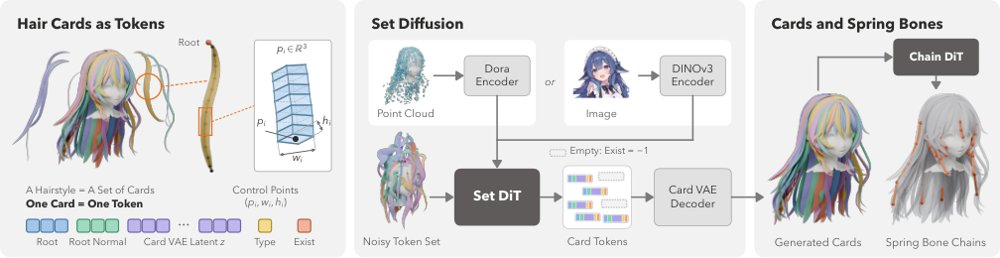
左：发型是一组发卡，每张卡编码成含根部位置、根部法向、card VAE潜变量、截面类型与存在标志的token；中：集合DiT用flow matching去噪整个token集合，跨卡注意并以点云或图像为条件，空槽位让模型自行决定卡数；右：card VAE解码出卡片，chain DiT再生成其弹簧骨链。
解决了什么问题。游戏和虚拟形象中风格化角色的头发由美术逐张摆放的发卡（hair card）构成，并靠弹簧骨链做次级运动，这些都需要手工完成。已有的单图方法要么输出真实感发丝，要么输出一整块融合网格，没有可动画的卡片结构；CHARM是唯一的风格化发卡生成器，但它把发型当成数百到数千个离散控制点组成的长序列自回归解码。
方法。作者把每张卡用card VAE编码成32维潜变量，连同根部位置、根部法向、菱形或三角形截面类型和存在标志组成40维token，一个发型对应192个token槽位。集合DiT不使用位置编码，以flow matching对所有token一起去噪，存在标志在去噪中自行决定生成多少张卡（平均约70张），条件可以是点云或单张图像的DINOv3特征。第二个集合DiT以卡token为条件，在48个槽位中生成弹簧骨链，再用固定几何蒙皮把卡绑到链上，得到可动画资产。
关键结果。在CHARM的100个测试发型上，Chamfer距离从0.0117降到0.0066（降44%），相对原始美术网格的卡片方向误差从40.0°降到16.8°，单发型耗时从33.7s降到1.01s（约33倍加速）。单图任务上，对齐后的CD为0.0089，对比CHARM的0.0186、TRELLIS.2的0.0139、Hunyuan3D-2.1的0.0148和DiffLocks转卡的0.0174；在76个测试角色上失败率3.5%、在40张网络图片上10.0%，其他方法分别为13.2%–34.2%与17.5%–77.5%，每张图1.33s。消融显示去掉根部法向后方向误差升至26.4°，去掉存在标志后只生成62.8张卡（集合DiT为68.9，真值67.4）。
为什么值得看。它把「一个美术原语一个token、原语之间无顺序」的集合式生成思路用到发卡上，同一套配方还复用到骨链，输出可直接导出为VRM等下游格式的可动画资产，而不只是给人看的网格。
局限 / 存疑。训练数据只来自VRoid风格化发型，极短发与真实感头发的alpha贴图发卡不在覆盖范围内，且只生成几何与UV、不生成贴图。此外蒙版内的道具（帽子、角、尾巴等）会被当作发卡生成，链DiT对头顶辐射等不常见链布局会生成偏少的链。
生成式 AI
计算机视觉 CV
alphaXiv · arXiv
生成器兼任重排器：一次预填充打分
Glance 用单一 9B 主干共享预填充候选段落，再由轻量适配器和指针头给每个段落打分。
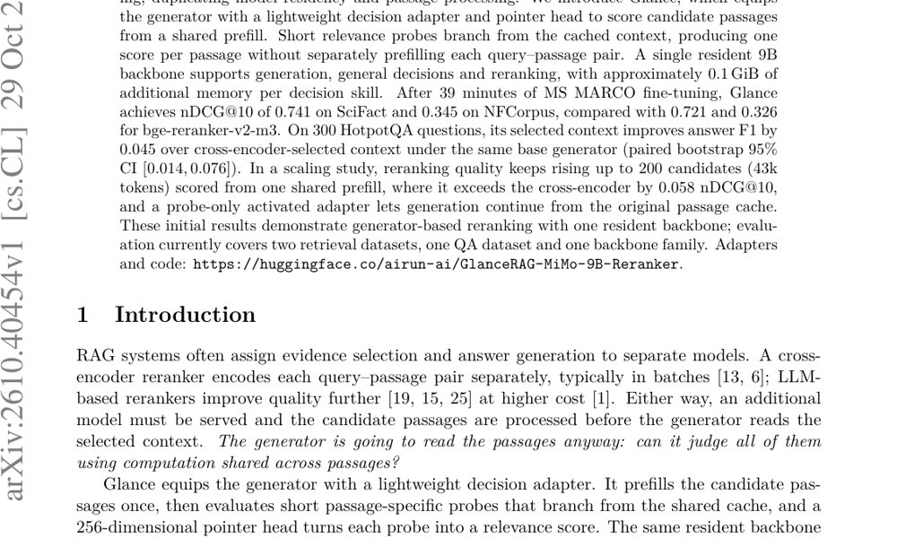
图 1：单一常驻主干先共享预填充所有候选段落，段落专属探针经指针头输出 k 个相关性分数；主流程重预填充 top-n 后生成，激活变体则从原缓存继续生成。
解决了什么问题。RAG 常把重排和回答交给不同模型，导致模型驻留和段落处理重复。交叉编码器逐对编码查询-段落，LLM 重排器质量更高但成本更大。问题是：生成器本来就要读这些段落，能否用跨段落共享的计算同时完成判断？
方法。Glance 在冻结的 9B 生成器上挂 rank-16 LoRA 决策适配器和 256 维指针头，先对候选段落做一次共享预填充，再让每个段落专属的短探针从缓存分叉并输出相关性分数。主流程用适配器打分后关闭适配器、重预填充 top-n 再生成；Glance-Activated 则只在探针 token 上启用适配器，使生成可从原始候选缓存继续。训练在 4,000 条 MS MARCO 查询上进行 39 分钟（55,598 个带标签探针），未使用 BEIR 或 HotpotQA 数据，每项决策技能约增加 0.1 GiB 显存。
关键结果。39 分钟 MS MARCO 微调后，Glance 在 SciFact 和 NFCorpus 上的 nDCG@10 分别为 0.741 和 0.345，高于 bge-reranker-v2-m3 的 0.721 和 0.326。300 道 HotpotQA 上，同一基础生成器使用 Glance 选出的 top-3 上下文，答案 F1 比使用交叉编码器选出的上下文高 0.045（配对 bootstrap 95% CI [0.014,0.076]）。在 200 个候选（43k token）的扩展实验中，Glance 的 nDCG@10 比交叉编码器高 0.058。
为什么值得看。如果成立，RAG 不必再单独驻留重排器，生成、通用决策和重排可共享同一 9B 主干与候选段落缓存，简化多模型服务。
局限 / 存疑。这是概念验证：评测仅覆盖两个 BEIR 数据集、一个 HotpotQA 和一种 9B 混合主干，BEIR 差异未做显著性检验。专用交叉编码器每查询仍更快（31–60 ms），当前实现显存随候选数×上下文长度增长（k=100 时 56 GiB），且激活适配器与缓存复用仅为 100 题单种子结果。
基础大模型 & 基础模型底层研究
生成式 AI
AI 工程、推理部署、系统方向
alphaXiv · arXiv
跨具身世界模型用潜在动作统一异构数据
阿里达摩院提出 RynnWorld-Latent，以 3D 接地潜在动作为共享条件接口，在 23 个数据集约 5.5 亿
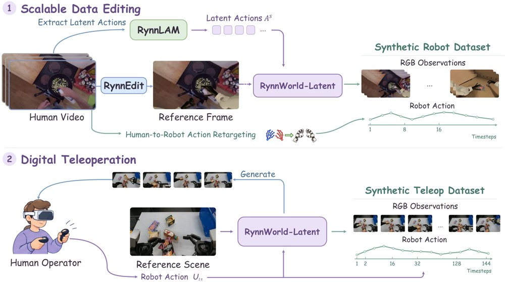
世界模型数据引擎总览：上方由源人类视频提取潜在动作并把首帧编辑成目标机器人以生成 rollout 与重定向伪动作，下方数字遥操作把人类控制信号重定向为机器人动作、以生成帧作为操作者视觉反馈。
解决了什么问题。语言条件只能描述任务级意图，无法指定抓取时机、接触顺序等帧级因果干预，同一指令对应多条可能轨迹。直接用原始机器人动作又会遇到关节数、坐标约定、控制频率各异的对齐瓶颈，而大规模人类视频根本没有原生控制标签。
方法。模型用冻结的 RynnLAM 从相邻帧提取 608 维连续潜在动作（512 维运动 token、64 维全局动作、32 维相机分量），把 576 维操作描述作为统一条件接口。在 Cosmos3 视频扩散 transformer 上，它把全局动作 token 送入联合自注意力，并额外加一条零初始化、与未来视频 latent 逐帧对齐的局部注入通路。目标机器人后训练阶段再引入轻量动作编码器，使模型可被原生机器人指令驱动，用于数字遥操作与潜在动作数据合成两条数据生成路线。
关键结果。在 DreamDojo 的 GR-1 三个评测集上，PSNR、SSIM、LPIPS 均优于所列基线，例如 EgoDex Eval 上 LPIPS 从 DreamDojo-14B 的 0.21 降到 0.19。真机评测中 Marvin-WUJI 上 PSNR 21.86、SSIM 0.80、LPIPS 0.12（Cosmos3-Edge 为 20.03/0.78/0.31），Astribot-S1 上为 15.96/0.60/0.34。消融显示换成文本条件后 Marvin-WUJI PSNR 降至 19.80、LPIPS 升至 0.30。策略侧，合成数据 mid-training 使 π0 在 LIBERO 上从 94.4% 升到 96.1%、LIBERO-Plus 从 53.6% 升到 79.4%；真机上 π0.5 的 Steak-Serving 从 40.00% 升到 60.00%，Plate-Retrieval 从 45.71% 升到 68.57%，每任务 35 次试验。
为什么值得看。它把「动作」从硬件指令换成从视频自监督学到的视觉转移描述，让人类视频、异构机器人和仿真数据能在同一条件下联合预训练，并把世界模型直接当作合成机器人数据的引擎。
局限 / 存疑。潜在动作从视觉转移推断，可能混入相机运动与外观变化，图像指标和定性跟随都不能证明因果识别或物理正确；合成管线里重定向动作与生成观测来自两个独立过程，时间对齐与过滤不保证物理一致，且真机结果每任务仅 35 次试验，合成 mid-training 的数据量与额外算力贡献也未分离。
基础大模型 & 基础模型底层研究
生成式 AI
计算机视觉 CV
机器人 & 具身智能
alphaXiv · arXiv
期刊
Science · Could your chatbot tip off a scientific rival? It’s possible, researchers say
《Science》第394卷第6823期（2026年10月）第476-477页的简讯讨论了一个值得关注的问题：聊天机器人可能向科研竞争对手泄露信息。对机器学习研究生而言，这提示在使用基于大模型的科研助手时，需要重视数据与想法的保密边界。
Nature · Even stupendous black holes can’t explain dark matter
《Nature》刊文指出，即使极其巨大的黑洞也无法解释暗物质。若这类理论天体是维系星系的神秘引力来源，它们应在宇宙辐射中留下更明显的印记。该结论对把暗物质归因于原初黑洞的模型构成限制。